Users of Cloud Installations, or On-Premise Installations with the Advanced Reporting option, have access to Process Director's Reports component, a sophisticated report generation utility. The report generator itself is fully documented in the Reports Reference Guide.
The purpose of this section of the Implementer's Guide is to cover only how the report generator integrates into Process Director. Please refer to the Reports Reference Guide for detailed instructions on how to use the report generation utility to design and create reports.
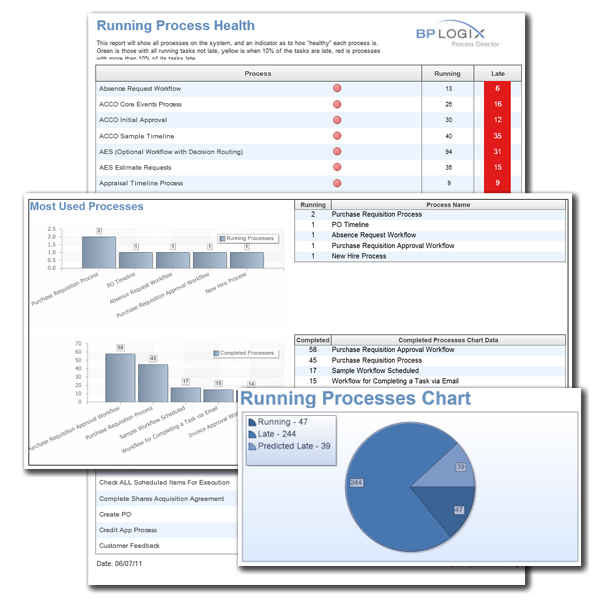
Creating a report in Process Director is as easy as creating any other object. From the Content List, navigate to the folder where you'd like to create the report. Once you have done so, select Report from the Create New… dropdown located in the upper right portion of the screen.
The Create Report screen will appear. In this screen, enter the name of the new report, then select the report type you wish to create.
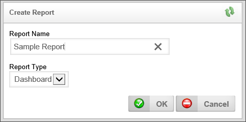
You have three choices of report type: Dashboard, Multi-page, and Portlet.
A layout with multiple “panels” in the report designer to assist you with spacing multiple charts on one page. It is approximately 10.75” x 5.5”. This option is best for reports that display infographics.
A report laid out on 8.5” x 11” letter sized paper designed for displaying pages of results and printing. This option is best for reports that present lengthy tabular or logical data.
A 5.7” x 2.5” layout designed for a quarter panel of a Process Director workspace.
Keep in mind that you can create custom sizes, but you would need to make sure that they show up correctly relative to your user’s aspect ratios and monitor resolutions.
Once you have selected the desired Report Type, click the OK button to create the report, and display the report properties.
There are three tabs for configuring a report, the Properties, Data Sources, and Variables tabs.
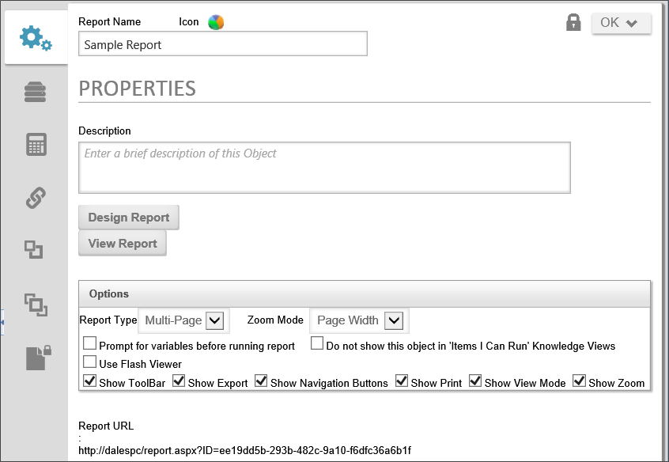
The report's description, which will appear in the second line of the Content List for the Report item.
The Design Report and View Report buttons allow you to create and view your report. See the Advanced Reporting documentation for details on designing a report.
Report Type: You have three choices of report type: Dashboard, Multi-page, and Portlet.
Zoom Mode: Zoom Mode determines the zoom level at which the report will display.
Prompt for variables before running report: The Variables that are sent to the reporting engine via Process Director (covered in section 3 below) may be changed by the end user when running the report, before the results are displayed.
Do not show this object in 'Items I Can Run' Knowledge Views: Checking this option will prevent the Report from displaying in the Knowledge Views.
Use Flash Viewer: Reports can be created or viewed using HTML or Flash. Using Flash requires the Flash plug-in, available from Adobe. The two types of reports look very similar, but the Flash version is better suited to displaying Portlet and Dashboard reports, as the Flash viewer automatically resizes the report to the available space.
Show Toolbar: Make the Bookmarks, Thumbnails, Find, and Full-Screen options available on the report.
Show Export: Display an option on the report enabling the user to save it in a wide variety of file types.
Show Navigation Buttons: Display page navigation buttons for multi-page reports, allowing the user to jump to a given page location within the report, rather than just viewing pages in succession.
Show Print: This will display the print button, allowing the user to print the report.
Show View Mode: Display options in the lower right hand corner of the report allowing the user to resize the report on the screen and show multiple pages at once.
Show Zoom: The zoom controls enable the user to automatically size the report to fit his or her display.
The Report URL will allow you to copy and paste a link directly to this report.
The Data Sources Tab allows you to specify how and what information you send to the Report Designer.
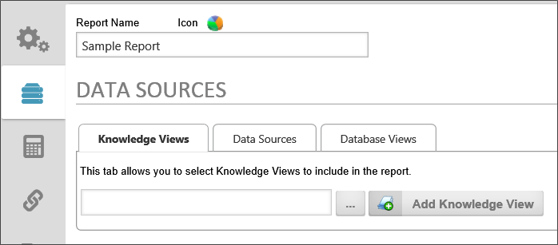
Knowledge Views: We allow you to import data from a previously constructed knowledge view in Process Director. It makes visually displaying your already constructed reportable information extremely easy.
Data Sources: This is the preferred way to retrieve data for reporting purposes. Using a Data Source that has specific tables and views selected and then editing the SQL SELECT statements would help produce the fastest possible reports.
Database Views: This will display not only our included views (tables constructed from joined data), but also the views that you can create in Process Director based on forms.
Process Director sends variables to the reporting engine automatically, including current user information, the name and description of the report, etc. You may also create custom variables and send them to the reporting engine.
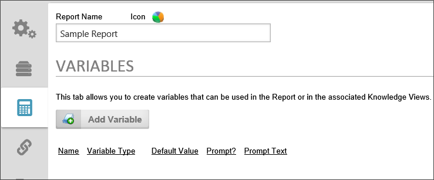
To add a variable to the report, click the Add Variable button.
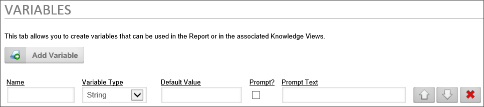
Variables have the following configuration options:
The name of the variable.
The data type of the variable. The following choices are available:
The initial value for the variable, or the value if no other value is available.
If checked, the user will be prompted for a value.
The text that will be used to prompt the user.
The reporting component can use three different types of data to compose reports: Knowledge Views, Data Sources, and Database Views. The fields contained in all of the report data sources you choose from the options screen will be available inside the report component when you design the report.
Once you have chosen the data you want to incorporate into your report, click the Update button to save your selections.
Reports can be constructed using any knowledge view, and multiple knowledge views can be included in a report. To add a Knowledge View to a report, click the Knowledge View tab of the report's options screen. Next, click the picker control's Build button, to open the Content List.
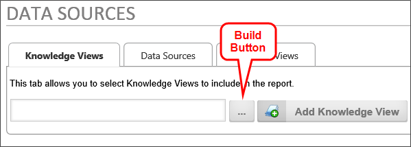
From the Content List, select a Knowledge View to use for the report's data, then click the OK button to add the Knowledge View to the picker. The name of the Knowledge View will appear in the picker control's text box.
Now, click the Add Knowledge View button to add the Knowledge View to the report. The Knowledge View will appear in the list of Knowledge Views in the report.
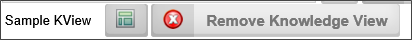
You can view the Knowledge View by clicking the button with the Knowledge View icon, or you can remove the Knowledge View by clicking the Remove Knowledge View button.
Just like Knowledge Views a report can use multiple data sources, and you can choose any data source in the Content List. This gives you access to data from SQL Server, social media, Microsoft Dynamics, or any other data source.
To add a data source, select the desired data source from the Please Choose Data Source dropdown. You can add the data source by clicking the Add Data Source Button. You can also test the data source to ensure the data source returns data by clicking the Test Data Sources button, which will cause a message to display, which shows the number of rows returned from the data source. You can also show the Advanced SQL syntax used to extract the data by clicking the Show Advanced SQL checkbox.
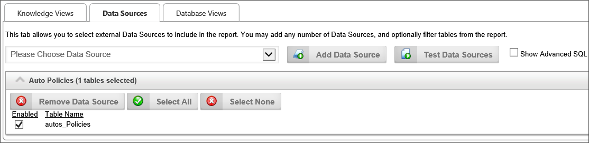
Process Director's internal database views of Forms and Processes may also be used as report data sources.
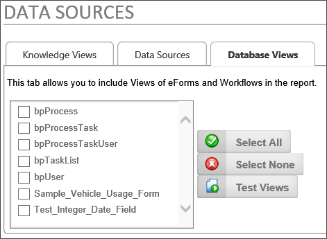
Simply select the views you wish to use in the report by checking the box next to the view's name.
Once you have selected the data sources you wish to use in your report, you can open the report designer by clicking the Design Report button on the options screen.
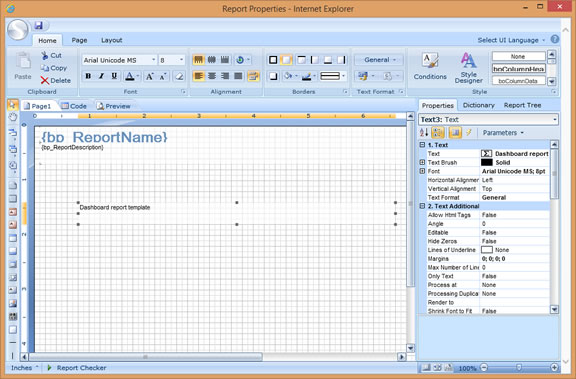
Inside the report designer, the data sources you've selected will be tied to the Data Band control, and will also be displayed in the Dictionary tab of the report designer's options panel, located on the right side of the report designer screen.
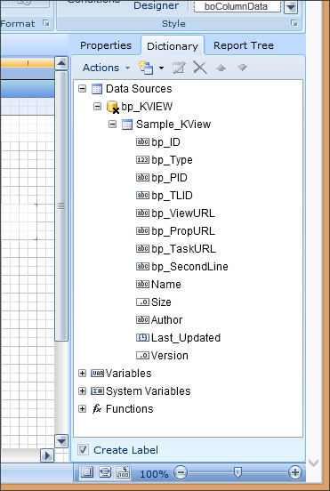
Again, for detailed information on designing reports, refer to the Reports Reference Guide.
We have included multiple pre-constructed Views for use with the reporting and they could also be used in your Knowledge Views. A detailed description of each View is presented in the following topics in the Database Guide:
The Process Director database uniquely identifies every object by assigning it a special identifier known as a Globally Unique Identifier (GUID) as the ID of the object. A
aa213c6f-a8aa-454f-a04d-30b56fd2e493
What you really need to know about the GUID is that, if you are linking tables together, it is what you should use.
If you search for all Process Instances of the type called “Capital Expenditure Process”, you may get any number of instances of different processes back, just because they are all named “Capital Expenditure Process.” The displayed name is not unique. But if you search for the “Capital Expenditure Process” instances using the Timeline Instance ID of 00000109-0000-0010-8000-00AA006D2EA4, you are sure to only get that specific Timeline instance.
You can find the ID of a Process Director object by looking at the object definition's properties. For instance, in a Process Timeline, the ID is displayed in the Options section of the Process Timeline definition's Properties tab. It is displayed as the PRID property, as shown below.
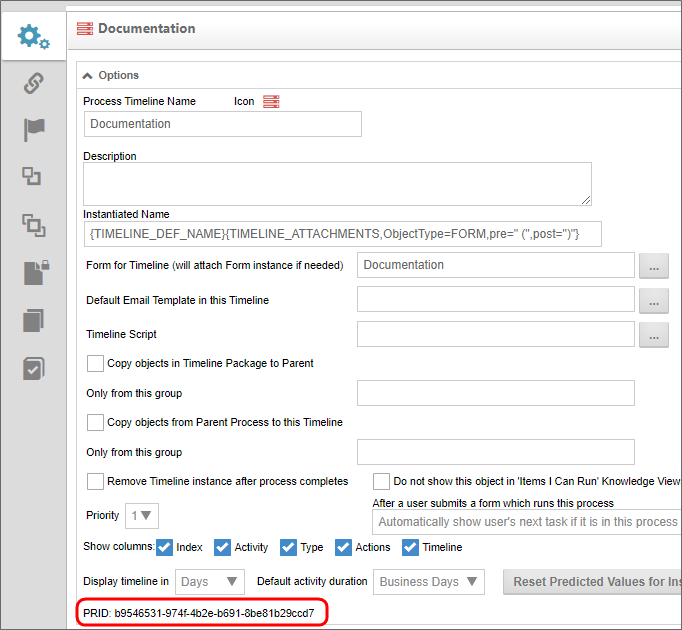
Datetime fields in SQL Server are displayed like this: 2007-10-28 22:11:19.7030000. How you display them while creating a report is up to you. You can just use the date or the time, or just the minutes if you wanted to.
NULL = “Unknown” or “No value.” There are many fields in a database that do not have values, and some of those have never had values. Some were inserted into the table with the value of “no value” (NULL). What you need to know about null is that null is not the same as a blank field. If a field is null and you filter out the “blank” fields… you are not filtering out fields where the value is NULL. Because if you have an SQL statement and you say:
SELECT * FROM tableName WHERE fieldName <> '';
You are not filtering out fields where fieldName is NULL. Because NULL is not the same as ‘’ (a zero length string). Instead, use something like this:
SELECT * FROM tableName WHERE fieldName <> '' AND fieldName IS NOT NULL;
You can see here that this is for a string value or character field, as I am using the character field delimiter ‘ (single quote).
The thing you need to know about NULL is how important they are to datetime fields. Dates that appear blank are NULL. There is no such thing as a blank datetime field, that field doesn’t exist. So your filtering of date fields (and other nullable fields) is going to use the IS NULL and IS NOT NULL switches in SQL.
SELECT * FROM bpProcessTaskUser WHERE StartTime IS NOT NULL AND EndTime IS NOT NULL AND UserUID <> '' AND UserUID IS NOT NULL;
That statement will return all of the tasks that were assigned to a user and completed, as they have both a StartTime, an EndTime and an assigned UserUID.